Ортодонтія · журнал «ДентАрт» 2018 №2
Корекція фронтального нахилу оклюзійної площини із застосуванням мікрогвинтів
CORRECTION OF CANTED MAXILLARY OCCLUSAL PLANE USING MINISCREWS
Михайло Соломонюк,стоматологічна клініка «Excelline» (м. Київ, Україна)
Ротація оклюзійної площини у фронтальному відділі – часте порушення оклюзії, яке характеризується надмірною однобічною екструзією молярів верхньої щелепи. Нерідко спостерігається у пацієнтів з асиметричним нижньощелепним вертикальним ростом, поєднується із сагітальними аномаліями прикусу або проявляється ізольовано.
Такі стани можуть призводити до функціональних і морфологічних порушень у роботі жувального апарату. Це проявляється зміною звичних рухів нижньої щелепи, обмеженням відкривання рота, зсувом суглобового диска, супроводжується шумовими явищами у скронево-нижньощелепному суглобі (СНЩС). Наявність таких змін протягом тривалого часу запускає процес анкілозування СНЩС.
Лікування лицьових деформацій зі зміщенням нижньої щелепи – ортохірургічне. У таких клінічних випадках роблять білатеральну спліт-остеотомію. Нахил оклюзійної площини усувають шляхом остеотомії верхньої щелепи або за методом Ле-Фор I.
Положення оклюзійної площини, не ускладнене лицьовою асиметрією, традиційно усували високою головний тягою, функціональними апаратами, пластинами із накусувальними площинами. Однак носити ці апарати слід не менше 16 годин на добу, а на це багато дорослих пацієнтів не згоджуються через естетичні і соціальні міркування.
Останнім часом для посилення опори при переміщенні зубів усе частіше стали використовувати ортодонтичні мікрогвинти. Відомо про ефективне їх застосування при ретракції фронтальних зубів, лікуванні дистальної і мезіальної оклюзії, для контролю вертикальної висоти лицьового скелета.
Метою нашої роботи є опис клінічного випадку лікування пацієнта з фронтальним нахилом оклюзійної площини із використанням мікрогвинтів.
У клініку на консультацію до ортодонта направили 20-річного пацієнта (фото 1). При зовнішньому огляді обличчя симетричне, пропорційне. Відкривання рота вільне, симптомів порушення з боку скронево-нижньощелепного суглоба не виявлено. Профіль опуклий, губи зімкнуті без напруги, дихання носове. Підборідна і носогубна складки виражені помірно. На фронтальній світлині обличчя пацієнта з внутрішньоротовою лінійкою в прикусі видно нахил оклюзійної площини праворуч.
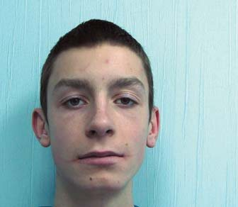
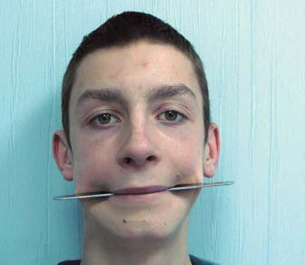
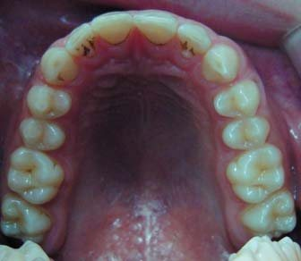
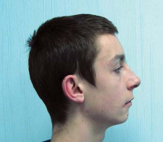
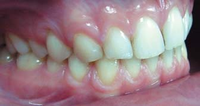
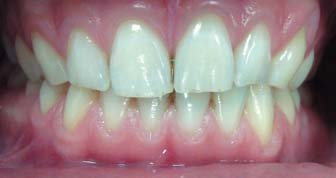
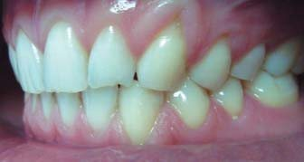
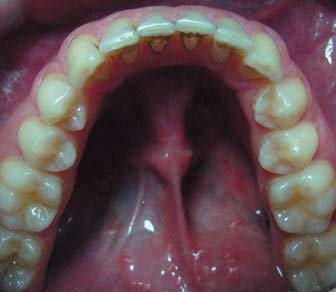
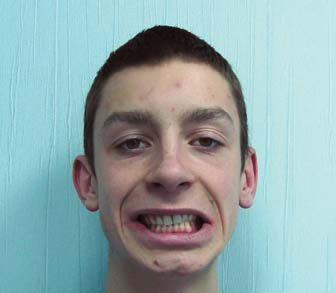
Фото 1. Фото пацієнта до лікування: а – профіль, б – верхній зубний ряд, в – анфас, г – вигляд праворуч, ґ – вигляд спереду, д – вигляд ліворуч, е – усмішка, є – нижній зубний ряд, ж – фронтальний вигляд з інтраоральною лінійкою в прикусі.
Інтраоральне обстеження: колір слизової оболонки переддвер'я ротової порожнини не змінений, глибина переддвер'я 5 мм, прикріплення вуздечки верхньої губи на відстані 4 мм від міжзубного сосочка має достатню протяжність і не обмежує рухливості губи. Слизова оболонка в зоні щік, дна ротової порожнини, піднебіння, язика без видимих патологічних змін. Вуздечка язика має нормальне прикріплення, не обмежує рухливість язика. На задній стінці глотки ділянок гіпертрофії і запального процесу не виявлено. Внутрішньоротовий огляд встановив екструзію молярів і премолярів праворуч. Дентальний I клас за Енглем по молярах та іклах з обох боків. Середня лінія між зубними рядами збігається.
Аналіз моделей виявив відсутність дефіциту простору на верхній і нижній зубній дузі, сагітальний ступінь – 2 мм, оклюзійна крива Шпеє – 1 мм (фото 2).
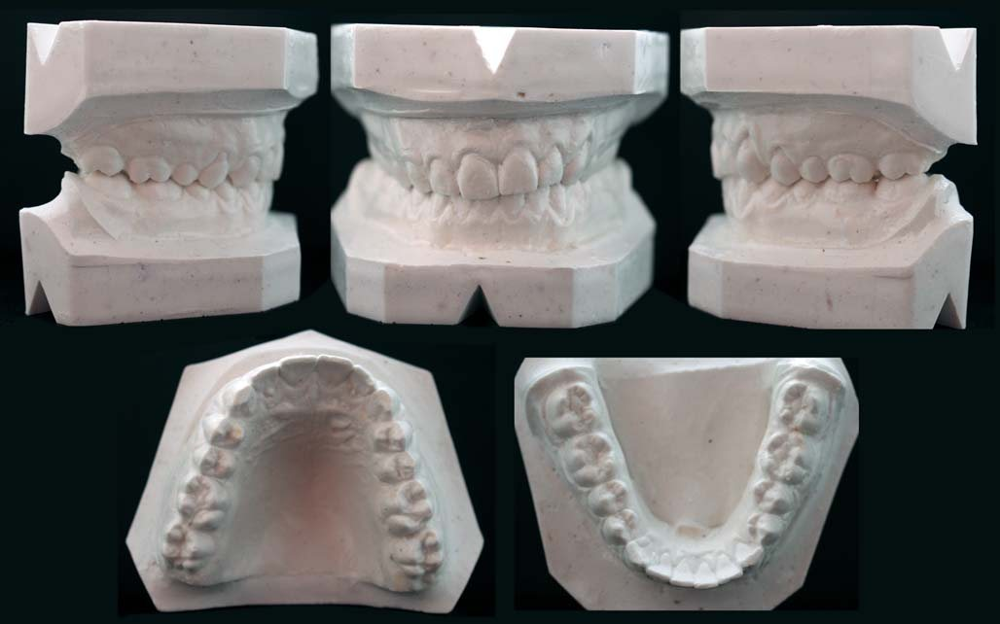
Фото 2. Моделі до лікування: а, б, в – вид праворуч, спереду і ліворуч, г – верхній зубний ряд, ґ – нижній зубний ряд.
На ортопантомограмі видно незавершене прорізування верхніх і нижніх третіх молярів, відсутність резорбції коренів зубів, що прорізалися.
Розшифрування бічної телерентгенографії (ТРГ) до лікування виявило скелетальний I клас – кут ANB – 3°, кути SNA – 83°, SNB – 80°, нижньощелепний кут FMA (кут між франкфуртською і нижньощелепною площиною) 19° (табл. 1). Положення верхніх різців U1 до FH (кут, утворений віссю верхніх центральних різців U1 до франкфуртської горизонталі FH) дорівнює 108°. Відношення нижніх центральних різців – IMPA (кут між віссю нижніх центральних різців і нижньощелепною площиною) становить 102°. Кут нахилу оклюзійної площини до франкфуртської горизонталі нижче середніх значень (FH до Occ P 6°). Симетричне положення передньої лицьової висоти щодо задньої – індекс PFH/AFH – становить 0,7 (фото 3).
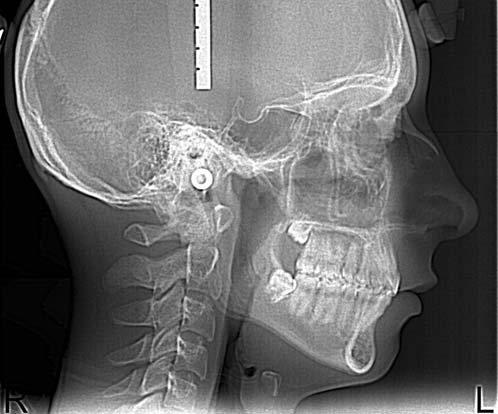
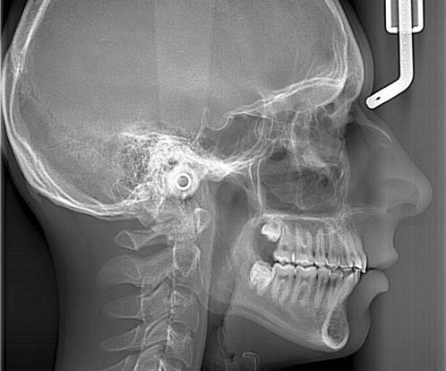
Фото 3. Телерентгенографія у бічній проекції: а – до, б – після лікування.
Показники ТРГ у прямій проекції до лікування вивчали відносно вертикальної і горизонтальної площин. За основу горизонтальної площини було обрано лінію, що з'єднує праву і ліву латероорбітальні точки (НL) вертикальної площини (VL) – лінія перпендикулярна до горизонтальної, що проходить через центр crista galli (точка, яка найбільш виступає по середній лінії від lamina cribrosa).
Положення Сo/Co до HL – кут між HL і лінією, що з'єднує зовнішні верхні точки виросткових відростків, – дорівнював 0° (фото 4). Площина дна носової порожнини (NF/NF) була ротована на 5° праворуч щодо HL (кут, утворений NF/NF і HL). Вилице-верхньощелепна площина до HL нахилена на 1,5° (утворена білатеральним точками вилицевого відростка, прилеглими до верхньощелепного горба). Фронтальна оклюзійна площина (maxillary occlusal plane) до НL відхилена на 5° (кут, сформований через ріжучі горби молярів верхньої щелепи і HL). Нижньощелепна площина була паралельна НL (лінії між латеральними нижніми точками у ділянці кутів нижньої щелепи; табл. 2).
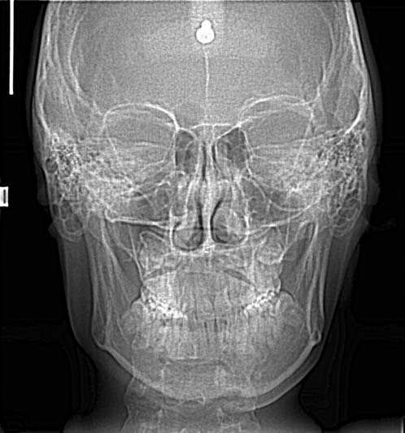
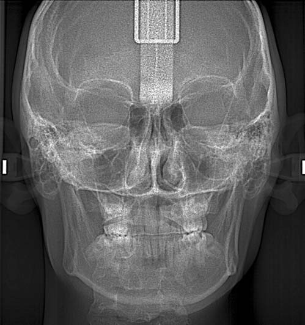
Фото 4. Телерентгенографія у прямій проекції: а – до, б – після лікування.
| Цефалометричні кути (°) | Середні значення | До лікування | Після лікування |
|---|---|---|---|
| SNA | 82 | 83 | 83 |
| SNB | 80 | 80 | 80 |
| ANB | 2 | 3 | 3 |
| FMA | 25 | 19 | 17 |
| PFH/AFH | 0,8 | 0,7 | 0,7 |
| FH к Occ P | 10 | 6 | 5 |
| Ui к FH | 114 | 108 | 111 |
| IMPA | 90 | 102 | 99 |
| Z-angle | 75 | 69 | 72 |
Верхня середня лінія (isf superior midline) була відхилена ліворуч на 2° (точка між верхніми центральними різцями на рівні їх ріжучих країв до вертикальної площини VL). Ментальна площина зміщена на 3° щодо VL (кут, утворений VL і лінією, спрямованою до нижнього ментального виступу). Зсув носової перегородки в межах 1° щодо VL (нижня точка на верхівці передньої носової порожнини Tns-ANS до VL).
| Цефалометричні кути (°) | До лікування | Після лікування |
|---|---|---|
| Bicondylar plane (HL-Co-Co) | 0 | 0 |
| Nasal floor plane (HL-NF'NF) | 5 | 0 |
| Maxillary jugal plane (HL-J'J) | 1,5 | 1 |
| Occlusal plane (HL-OCP) | 5 | 0 |
| Gonial plane (HL-Go'Go) | 0 | 0 |
| Superior midline (VL-isf) | 2 | 1 |
| Mental line (VL-Me) | 3 | 1 |
| Nasal septum deviation (Tns-ANS) | 1 | 1 |
Таким чином, аналіз ТРГ у прямій проекції до лікування виявив зміни розташування кісткових структур: maxillary occlusal plane і NF/NF до HL на 5°. Зсув ментальної площини від VL в межах 3°.
На підставі даних клінічних обстежень, антропометричного дослідження моделей щелеп, використання додаткових спеціальних методів дослідження ТРГ у прямій та бічній проекції, ортопантомографії було поставлено діагноз: співвідношення молярів та іклів – І клас за Енглем, ускладнене нахилом фронтальної оклюзійної площини, скелетний I клас.
Лікувальні етапи, необхідні для корекції виявленої патології:
- санація ротової порожнини;
- вирівнювання зубних дуг;
- інтрузія молярів і премолярів на правій верхній щелепі;
- корекція положення фронтальної оклюзійної площини;
- досягнення ідеальної статичної та динамічної оклюзії.
Для вирішення поставлених завдань було запропоновано кілька варіантів лікування. Перший передбачав інтрузію молярів і премолярів на верхній зубній дузі праворуч, використовуючи накусувальні блоки у комбінації з високою головною тягою. Від носіння знімних і позаротових апаратів пацієнт категорично відмовився. Другий, альтернативний лікувальний план – інтрузія верхніх бічних зубів і корекція фронтальної оклюзійної площини з опорою на мікрогвинти. Пацієнт погодився з цим варіантом лікування.
Було встановлено незнімну апаратуру «пропис Рот» c пазом 0,022 дюйма і фіксованою первинною нікель-титановою (Ni-TI) дугою розміром 0,14 дюйма – потім 0,16 і 0,16-0,25 дюйма. Після вирівнювання зубних дуг встановлено сталеву дугу 0,19-0,25 дюйма на брекети верхнього і нижнього зубного ряду. Для абсолютної опори у міжкореневий простір між премолярами і першим моляром на верхній щелепі праворуч у косому напрямку під кутом 60° до поверхні кістки було встановлено два мікрогвинти фірми «Dentos AbsoAnchor» (Корея) товщиною 1,3 мм і довжиною 8 мм. Інтрузію бічних зубів робили, використовуючи еластичний ланцюжок із силою 150 г, фіксуючи його від головок мікрогвинтів навколо дуги в зоні премолярів і першого моляра (фото 5).
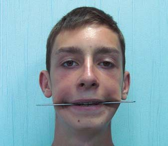
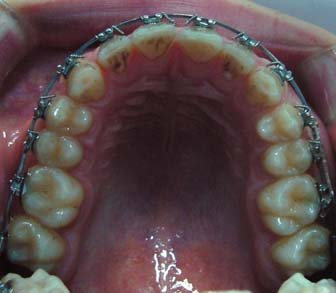
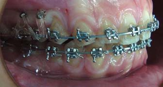
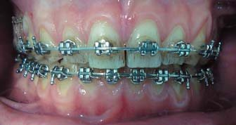
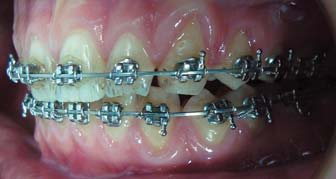
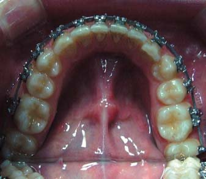
Фото 5. Установлено два мікрогвинти на верхній щелепі праворуч: а – верхня зубна дуга, б – вигляд обличчя спереду з лінійкою в прикусі, в – праворуч, г – фронтальний вигляд, ґ – ліворуч, д – нижня зубна дуга.
Результати лікування
Брекет-систему зняли через 18 місяців після початку лікування. На фронтальному фото обличчя в прикусі з лінійкою видно паралельність оклюзійної площини щодо лінії зіниць. Інтраоральні світлини демонструють вирівнювання зубних дуг (фото 6).
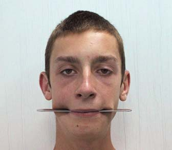
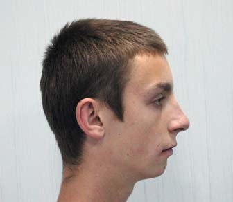
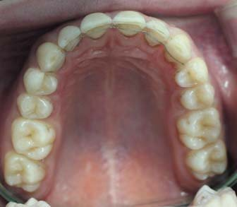
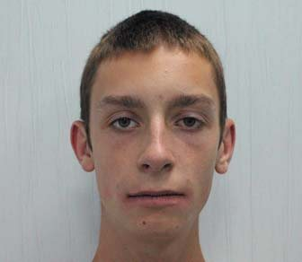
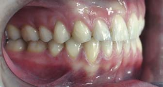
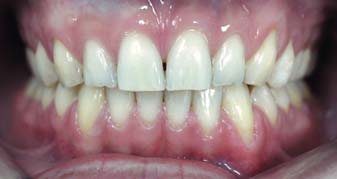
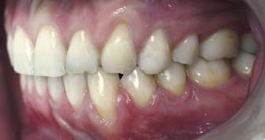
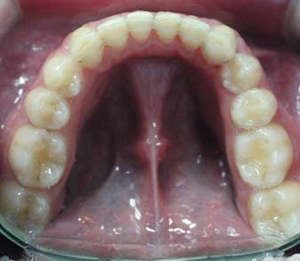
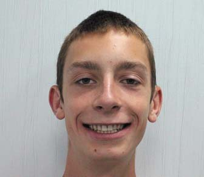
Фото 6. Фото пацієнта після лікування: а – анфас, б – верхній зубний ряд, в – фронтальний вигляд обличчя з лінійкою в прикусі, г – вигляд праворуч, ґ – вигляд спереду, д – вигляд ліворуч, е – усмішка, є – нижній зубний ряд, ж – профіль.
Аналіз моделей показав середні значення сагітальної і вертикальної різцевої оклюзії. Співвідношення по іклах і молярах були І класу за Енглем, співпадіння середньої лінії на верхньому і нижньому зубному ряду (фото 7).
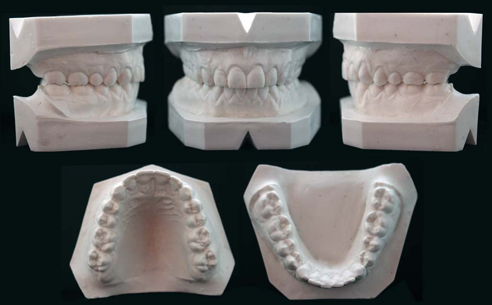
Фото 7. Моделі щелеп після лікування: а, б, в – вид праворуч, спереду і ліворуч, г – верхній зубний ряд, ґ – нижній зубний ряд.
При діагностиці в артикуляторі у стані спокою було виявлено щільний міжгорбиковий контакт між зубними рядами, відсутність передчасних контактів при бічних рухах нижньої щелепи, фронтальну напрямну та іклове ведення з обох боків.
За ТРГ у бічній проекції після лікування встановлено зміну цефалометричних показників. Знизилися вертикальні розміри: кут FMA до 17° (19° перед лікуванням), FH до Occ P до 5°. Кут U1 до FH становив 111°, IMPA відповідав 99°, Z-angle збільшений до 72°.
Показники цефалометрії у прямій проекції після лікування продемонстрували паралельність maxillary occlusal plane і NF/NF до HL. Зсув Isf superior midline і ментальної площини було знижено до 1° щодо VL.
На ортопантомограмі корені зубів паралельні, відсутня їх резорбція (фото 8).
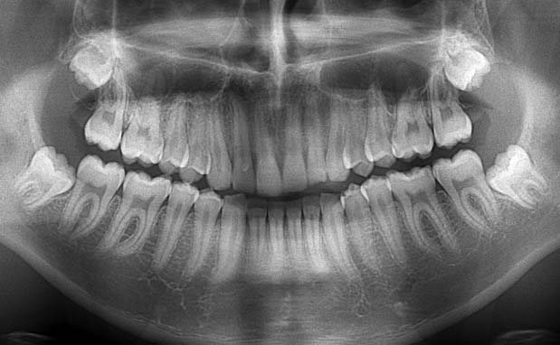
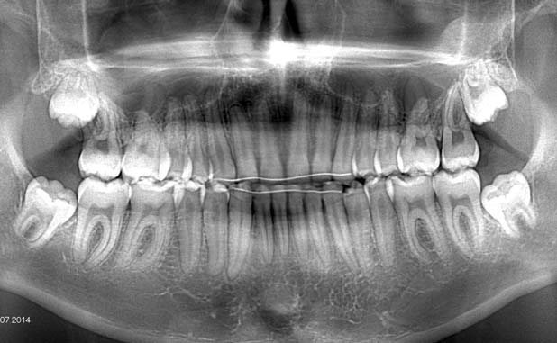
Фото 8. Ортопантомограма: а – до лікування, б – після лікування.
Через 1 рік ретенції при клінічному огляді був відсутній рецидив, спостерігалася стабільність раніше отриманих результатів. Положення іклів і молярів було I клас за Енглем. Відсутність скупченості зубів у фронтальній ділянці на верхньому і нижньому зубному ряду. Зубні дуги мають правильну форму, в нормі сагітальний ступінь і вертикальна оклюзія. Відсутність симптомів дисфункції з боку скронево-нижньощелепного суглоба (фото 9).
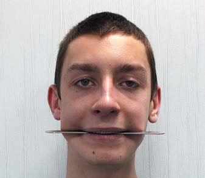
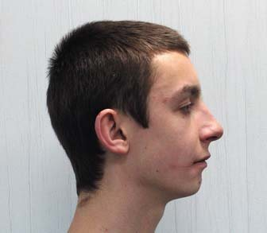
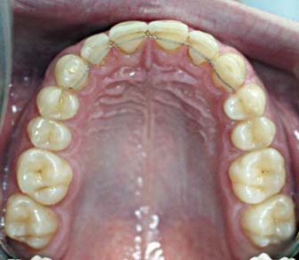
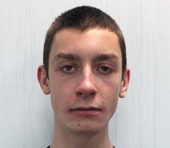
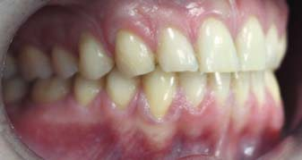
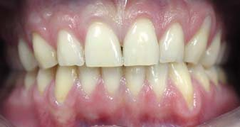
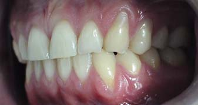
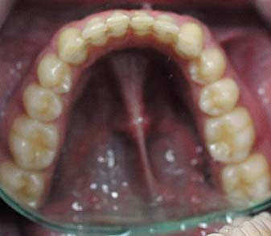
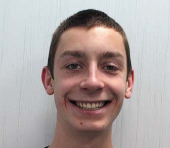
Фото 9. Фото пацієнта через 1 рік після лікування: а – анфас, б – верхній зубний ряд, в – фронтальний вигляд обличчя з лінійкою в прикусі, г – вигляд праворуч, ґ – вигляд спереду, д – вигляд ліворуч, е – усмішка, є – нижній зубний ряд, ж – профіль.
Аналіз і обговорення
Зміна положення фронтальної оклюзійної площини може спостерігатися у пацієнтів як з лицьової асиметрією, так і з гармонійним типом лицьового скелета. Домінуючий вплив на положення оклюзійної площини чинять дентальні, скелетні, м'язові і функціональні структури. Однак немає виключного впливу якогось певного чинника, в основному спостерігається їх комбінована дія.
Дентальними факторами ризику можуть бути: рання втрата молочних зубів, затримка прорізування, відсутність зачатків постійних зубів, шкідливі звички смоктання, розбіжність часу прорізування зубів на правій і лівій половинах альвеолярних відростків. Це призводить до різниці вертикального росту, якщо на одному боці він збільшений, а на другому зменшений, нижня щелепа адаптується до меншої висоти шляхом подальшого зсування в цей бік.
Відсутність корекції різних вертикальних розмірів у період росту впливає на ріст виростка нижньої щелепи, викликаючи скелетні зміни. Метою ортодонтичного лікування таких пацієнтів є усунення відмінностей у вертикальних параметрах між сторонами за рахунок інтрузії молярів незміщеного боку і екструзії на зміщеному.
Скелетна асиметрія також може бути викликана вродженими аномаліями (наприклад, геміфаціальна мікросомія або гемімандибулярна гіпертрофія), але найчастіше вона є результатом травми суглобового відростка нижньої щелепи. Для симетричного росту щелеп після травми використовують функціональні апарати: активатор II класу, біонатор або ін. Їх виготовляють у конструктивному прикусі, висуваючи нижню щелепу вперед до прямого контакту між верхніми і нижніми центральними різцями. Це вимушене переднє положення щелепи викликає трансляцію виростка і ремоделювання СНЩС при відсутності на неї навантаження.
Вплив функції м'язів на формування щелепно-лицьового комплексу є предметом активних досліджень уже багато років. Доведено, що положення голови і тіла тісно пов'язане з функціями м'язів шиї і жувальною мускулатурою. Порушення постави, однобічне жування, звичний нахил голови в один із боків можуть викликати асиметричну напругу грудинно-ключично-соскоподібних і жувальних м'язів. Продовження цього стану протягом тривалого часу призводить до асиметричної зміни форми скелету, оскільки відбувається надмірний ріст на одному боці і менший на другому. Формується асиметрична оклюзія у вертикальній площині між правим і лівим боком.
Аналіз поверхневого шару скроневих кісток на комп'ютерній томограмі демонструє чітку різницю в їх товщині. Кортикальна кістка в зоні інтрузії молярів товща, а на боці екструзії тонша. Однобічне ущільнення кісткових структур відбувається на тлі нахилу оклюзійної площини, створюючи нерівномірний розподіл жувального навантаження.
Зазвичай пацієнти з боковим зміщенням нижньої щелепи звикають до жування на зміщеному боці. У цьому випадку ступінь тяжкості буде прогресувати. Отже, пацієнта просять жувати на незміщеному боці. І якщо це важко, рекомендується виготовити однобічну шину.
Таким чином, мета ортодонтичного лікування – поліпшення відмінностей у вертикальних розмірах шляхом забивання молярів на незміщеному боці і екструзії їх на зміщеному. Для цього використовують високу головну тягу в комбінації з інтраоральним апаратом, багатопетлеву механіку з еластичною тягою або мікрогвинти.
Усунення нахилу оклюзійної площини з допомогою мікрогвинтів забезпечує максимум механічних переваг у порівнянні з іншими методами. Немає необхідності у застосуванні знімних інтраоральних і позаротових апаратів – лікування починається безпосередньо з установки незнімних систем. Одночасна інтрузія верхніх молярів і премолярів при застосуванні цієї техніки передбачає мінімальне згинання дуг, зменшує час для активації апаратури.
У пацієнтів з лицьовою асиметрією корекція положення оклюзійної площини з допомогою мікрогвинтів замість хірургічної операції по Ле-Фор I показала зменшення тривалості оперативного втручання (одна операція замість двох), зниження вартості лікування для пацієнта, зменшення післяопераційного дискомфорту, поліпшення прогнозу і стабільність досягнутих результатів.
Застосуванню мікрогвинтів надають перевагу, зважаючи на простоту встановлення, мінімальні анатомічні обмеження при вкручуванні, відсутність очікування періоду остеоінтеграції, можливість безпосереднього навантаження після встановлення. Для їх стабільної опори в кістковій тканині протягом усього періоду лікування дуже важливо правильно вибирати довжину, діаметр і точність установлення.
Вибір діаметру мікрогвинта залежатиме від ширини міжкореневого простору, що визначається на періапікальному контактному рентгенівському знімку або фрагменті комп'ютерної томографії. За наявності достатнього простору рекомендовано встановлювати мікрогвинт не менше ніж 1,5 мм на верхній і нижній щелепі. Якщо простір обмежений близькістю коренів, укручують гвинт мінімального діаметру – 1,2-1,3 мм.
Довжина не матиме вирішального значення, оскільки основна фіксація відбувається між мікрогвинтом і кортикальною кісткою. Однак на верхній щелепі його встановлюють не менше 6 мм, на нижній – 5 мм.
Мікрогвинт найліпше вводити в косому напрямку під кутом 30-60° до поверхні кістки. Такий напрям дозволяє знизити ризик ушкодження коренів під час установлення. Його охоплює більший обсяг кортикальної кістки, що збільшує силу зчеплення з кісткою. Ліпше встановлювати мікрогвинти в зоні прикріплених ясен від краю на 6-8 мм. Це дає можливість гарного доступу до головки мікрогвинта для використання різних варіантів еластичної тяги.
Ключовий момент мікроімплантації – вибір оптимальної сили для переміщення зубів. Ортодонтична сила 250 г ефективно застосовується для мезіодистального переміщення бічних і ретракції фронтальних зубів. Успішно проведена інтрузія вимагає ретельнішого контролю величини зусилля, оскільки сила концентрується на невеликій ділянці апекса кореня. Дослідження Burston демонстрували інтрузію центрального різця дією сили 20 г. Melsen і Fiorelli інтрузували бічні зуби, що стояли поодиноко, застосовуючи тяги від головок мікрогвинтів зі щічного і лінгвального боку із силою 50 г. Hwang і співавт. використовували понад 90 г тяги для профілактики екструзії молярів після остеотомії. Опубліковані клінічні випадки інтрузії молярів з опорою на мікрогвинти із зусиллям 200 г без розробції коренів.
Запропонований нами план лікування полягав в інтрузії молярів еластичним ланцюжком із силою 150 г. За рівнем сил він іде після закриваючих петель і сталевих пружин. Інтрузивна сила, що застосовується на щічній поверхні, викликає і ротаційний рух, збільшуючи позитивний торк зубів. Для обмеження цих ротаційних рухів рекомендується фіксувати піднебінний бюгель до молярів верхньої щелепи. У нашій роботі ми його не використовували. Після кожної активації еластичним ланцюжком торк у бічній ділянці контролювали за допомогою щипців Твіда, виконуючи компенсаційні вигини III порядку.
У доступній літературі немає даних досліджень щодо тривалої ретенції положення зубів після інтрузії. Однак власні клінічні спостереження засвідчують тривалу стабільність у випадках, де досягнуті функціональна оклюзія, правильні оклюзійні контакти, збалансована робота м'язів щелепно-лицьової ділянки та СНЩС. Ці фактори служитимуть ефективною профілактикою рецидиву.
Висновки
- Ротація фронтальної оклюзійної площини може спостерігатися у пацієнтів як з лицьовою асиметрією, так і з гармонійним типом лицьового скелета.
- Лицьова асиметрія, ускладнена інклинацією оклюзійної площини, характеризується одностороннім збільшенням вертикального рівня альвеолярної кістки та екструзією молярів верхньої щелепи. Внаслідок цього нижня щелепа зміщується вбік.
- При появі симптомів асиметрії у пацієнтів у період активного росту щелеп рекомендовано застосовувати функціональні апарати.
- З метою корекції нахилу фронтальної оклюзійної площини у дорослих ліпше використовувати мікрогвинти діаметром від 1,5 мм і не менше 6 мм довжини під кутом 30-60° до поверхні кістки.
- Успіх мікроімплантації залежить від щільності кісткової тканини пацієнта, клінічних навичок та досвіду ортодонта, проведених диференційно-діагностичних етапів, вибору місця та напрямку встановлення мікрогвинтів, індивідуальної гігієни ротової порожнини.
Література
- Park YC, Lee SY, Kim DH, Jee SH. Intrusion of posterior teeth using miniscrew implants // Am. J. Orthod. Dentofacial. Orthod. – 2003. – Vol. 123. – P. 690-694.
- Jeon YJ., Kim YH., Son WS., Hans MG. Correction of a canted occlusal plane with miniscrews in a patient with facial asymmetry // Am. J. Orthod. – 2006. – Vol. 130. – P. 244-252.
- Inui M., Fushima K., Sato S. Facial asymmetry in temporomandibular joint disorder // J. Oral. Rehabil. – 1999. – Vol. 26. – P. 402-406.
- Kuroda S., Sakai Y., Tamamura N., Deguchi T., Takano-Yamamoto T. Treatment of severe anterior open bite with skeletal anchorage in adults: comparison with orthognatic surgery outcome // Am. J. Orthod. – 2007. – Vol. 132. – P. 599-605.
- Bonetti GA., Giunta D. Molar intrusion with removable appliance // J. Clin. Orthod. – 1996. – Vol. 30. – P. 434-437.
- Kyung HM., Park HS., Bae SM., Sung JH., Kim IB. Development of orthodontic microimplants for intraoral anchorage // J. Clin. Orthod. – 2003. – Vol. 37. – P. 321-328.
- Соломонюк М.М. Дистализация верхних боковых зубов у взрослых пациентов с дистальной окклюзией зубных рядов с применением микроимплантатов // Ортодонтия. – 2013. – №4. – С. 52-58.
- Cetlin N.M., Ten Hoeve A. Non extraction treatment // J. Clin. Orthod. – 1993. – Vol. 17. – P. 396-413.
- Solow B., Sandham A. Craniocervical posture: a factor in the development and function of the dentofacial structures // Eur. J. Orthod. – 2002. – Vol. 24. – P. 447-456.
- Huggare J., Raustia A. Head posture and cervicovertebral and craniofacial morphology in patients with craniomandibular dysfunction // J. Craniomandib. Prac. – 1992. – Vol. 10. – P. 173-177.
- Hwang HS., Hwang CH., Lee KH., Kang BC. Maxillofacial 3-dimesional image analysis for the diagnosis of facial asymmetry // Am. J. Orthod. Dentofacial. Orthod. – 2006. – Vol. 130. – P. 779-785.
- Takano-Yamamoto T., Kuroda S. Titanium screw anchorage for correction of canted occlusal plane in patients with facial asymmetry // Am. J. Orthod. Dentofacial. Orthop. – 2007. – Vol. 152. – P. 237-242.
- Liou EJ., Pai BC, Lin JC. Do miniscrews remain stationary under orthodontic forces // Am. J. Orthod. Dentofacial. Orthod. – 2004. – Vol. 126. – P. 42-47.
- Burston SR. Deep overbite correction by intrusion // Am. J. Orthod. Dentofacial. Orthop. – 1977. – Vol. 72. – P. 1-22.
- Melsen B., Fiorelli G. Upper molar intrusion // J. Clin. Orthod. – 1996. – Vol. 30. – P. 91-96.
- Hwang HS., Lee KH. Intrusion of overerupted molars by corticotomy and magnets // Am. J. Orthod. Dentofacial. Orthop. – 2001. – Vol. 120. – P. 209-216.
- Chang YJ., Lee HS., Chun YS. Microscrew anchorage for molar intrusion // Am. J. Orthod. Dentofacial. Orthod. – 2004. – Vol. 38. – P. 325-330.